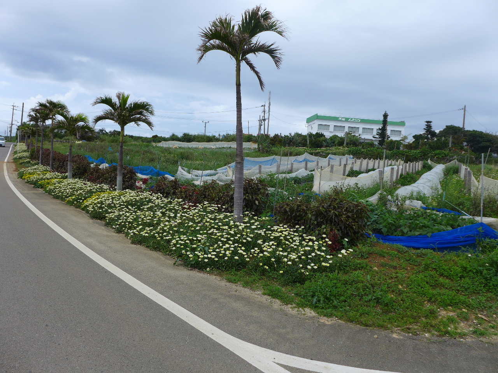

Flash ! DX
|
Who said 6M was a dead band ?
|
(注)
このReportをご覧になる方へ
[Back Issues Apr.2016]
TIME:UTC(JST-09:00)
Report from JA1RJU(PM95sq)
30.Apr.2016(15:00b)
Report from JA1RJU(PM95sq)
29.Apr.2016(15:00b)
Report from JA1RJU(PM95sq)
28.Apr.2016(15:00b)
Report from JA1RJU(PM95sq)
27.Apr.2016(15:00b)
Report from JA1RJU(PM95sq)
26.Apr.2016(15:00b)
Report from JA1RJU(PM95sq)
25.Apr.2016(15:00b)
Report from JA1RJU(PM95sq)
24.Apr.2016(15:00b)
◎ All JA CONTEST(-21:00JST)
Report from JA1RJU(PM95sq)
23.Apr.2016(15:00c)
◎ All JA CONTEST(21:00JST-)
9M2ZAK 06:58 50.110 CW CQ
9M2ZAK 07:03 50.110 CW @ RST599
Report from JA1RJU(PM95sq)
22.Apr.2016(15:00b)
Report from JA1RJU(PM95sq)
21.Apr.2016(15:00b)
Report from JA1RJU(PM95sq)
20.Apr.2016(15:00c)
VK4RHT/b 09:15- 50.281 CW Beacon RST599
VK4RTL/b 09:20- 50.282 CW Beacon
Report from JA1RJU(PM95sq)
19.Apr.2016(15:00c)
T88UW 08:20 50.115 CW
VK4RHT/b 08:40- 50.281 CW Beacon
Report from JA1RJU(PM95sq)
18.Apr.2016(15:00d)
VK4RHT/b 06:25- 50.281 CW Beacon
VK4RTL/b 06:25- 50.282 CW Beacon
VK4TVL/b 08:25- 50.294.5 CW Beacon
VK6RSX/b 06:25- 50.304 CW Beacon
(JA5FFJ 06:24 50.276 WSJT JT65a CQ -22dB)
VK4BLK 06:29 50.276-0.560 WSJT JT65a -18dB QSO=>JA5
VK4BLK 06:37 50.276-0.035 WSJT JT65a -17dB QSO=>JA3
VK4BLK 06:41 50.276-0.035 WSJT JT65a CQ -17dB
VK6RSX/b 07:53- 50.304 CW Beacon
Report from JA1RJU(PM95sq)
17.Apr.2016(15:00c)
VK4BLK 05:28 50.276-0.565 WSJT JT65a CQ -13dB
VK4BLK 05:34 50.276-0.563 WSJT JT65a CQ -05dB
VK4BLK 05:44 50.276-0.565 WSJT JT65a CQ -03dB
VK4BLK 05:28 50.276-0.180 WSJT JT65a CQ -05dB
|
◎日本海を通過した前線を伴う低気圧に吹き込む南からの強風が関東地方でも未明から吹き荒れ。午後から千葉で36.3m、東京・江戸川区でも30.5mの強風が記録された。
低気圧の通過に伴い、気温も5月並みに上昇。アンテナは終日”クランクダウン”。
|
Report from JA1RJU(PM95sq)
16.Apr.2016(15:00f)
BW8/JH3GGC 03:45 50.140 SSB @ RS59+ OP=Mtatuura
BW8/JH3GGC 05:07 50.140 SSB
V73SIX/B 05:35- 50.011.7 CW Beacon RST599
VK4AMG 06:10 50.165 SSB
VK4RHT/b 06:10- 50.281 CW Beacon
VK4RTL/b 06:10- 50.282 CW Beacon
VK8RAS/b 06:14- 50.045.8 CW Beacon
VK4CL 06:16 50.120 SSB
VK4WTN 06:24 50.105 CW
DU1EV/B 06:28- 50.07.9 CW Beacon RST599+
9W6EZ 06:32 50.276+0.538 WSJT JT65a QRM
VK4KSY 06:41 50.276 WSJT JT65a -05dB
VK4BLK 06:54 50.276+0.627 WSJT JT65a -02dB
9W6EZ 06:57 50.276+0.323 WSJT JT65a CQ -09dB
DU1EV/B 07:00- 50.07.9 CW Beacon
9W6EZ 07:03 50.276+0.326 WSJT JT65a CQ -12dB
VK4BLK 07:06 50.276+0.493 WSJT JT65a CQ -08dB
9W6EZ 07:15 50.276+0.326 WSJT JT65a CQ -10dB
9W6EZ 07:21 50.276+0.328 WSJT JT65a CQ -11dB
DK7GG/DU6 08:29 50.276-0.266 WSJT JT65a -06dB
DK7GG/DU6 08:46 50.276-0.132 WSJT JT65a -05dB
DK7GG/DU6 08:48 50.276.380 WSJT @ JT65a -10dB/-04dB (QSO=30W)
DU1EV/B 09:00- 50.007.9 CW Beacon RST599
DK7GG/DU6 09:02 50.276-0.213 WSJT JT65a -01dB
VK4BLK 09:06 50.276-0.433 WSJT JT65a CQ -04dB
VK4RHT/b 09:10- 50.281 CW Beacon RST599
VK6RSX/b 09:10- 50.304 CW Beacon
Report from JA1RJU(PM95sq)
15.Apr.2016(15:00d)
VK4RHT/b 03:26- 50.281 CW Beacon
9W6EZ 08:19 50.276 WSJT JT65a CQ -06dB
9W6EZ 08:30 50.110 SSB/CW CQ
9W6EZ 08:45 50.276 WSJT JT65a CQ -05dB
9W6EZ 08:56 50.276 WSJT @ JT65a -13dB/-07dB (QSO=30W)
DK7GG 08:57 50.276+0.390 WSJT JT65a -07dB (/DU6 QSL=DU/Para Bureau)
9W6EZ 09:14 50.276 WSJT JT65a CQ -08dB
T88UW 09:46 50.115 CW @ UP5 RST557-599 QSB (QSL=To JH7IPR)
DU7/PA0HIP 10:12 50.110.5 CW CQ CQ
Report from JA6FRI(PL46ea/PM95sq)
14.Apr.2016(15:00b)
Report from JA6FRI(PL46ea)
13.Apr.2016(00:00b)
◎本日で鹿児島県大島郡与論島でのJA6FRI(200W・固定局)の運用を終了。
Report from JA6FRI(PL46ea)
12.Apr.2016(15:00b)
Report from JA6FRI(PL46ea)
11.Apr.2016(15:00b)
Report from JA6FRI(PL46ea)
10.Apr.2016(15:00c)
KG0DX 09:40 50.115 SSB CQ
BG6CJR 09:44 50.116 CW CQ
DU7/PA0HIP 09:55 50.110 CW week
BU2AQ 08:56 50.110 CW weak
DU7/PA0HIP 09:59 50.105 CW CQ
Report from JA6FRI(PL46ea)
09.Apr.2016(15:00c)
KG0DX 07:45 50.105 SSB CQ
KG6DX 08:00 50.105 CW RST599++
HL2CFY 08:10 50.103 CW CQ
(JE7YNQ/b 09:00- 50.027 CW Beacon JA1/7 Good Open!)
Report from JA6FRI(PL46ea)
08.Apr.2016(15:00c)
9M0O 08:25 50.105 CW CQ UP2
9M0O 08:27 50.105 CW 50.107MHz QSO with JA6FRI
9M0O 08:29 50.105 CW @ Strong! QSO with JA1RJU/6
KG0DX 09:01 50.101 CW @ QSO with JA6FRI
9M0O 09:05 50.105 CW QSO with DU
KG6DX 09:08 50.102 CW CQ
HL5BMX 09:10 50.103 CW CQ
9M0O 09:18 50.105 CW CQ UP RST599+++
HL5BMBX 09:18 50.103 CW CQ CQ
9W6EZ 09:27 50.110 SSB @ QSO with JA6FRI & JA1RJU/6

鹿児島県最南端の与論島から20Km先南方に沖縄の最北端が望める

 2016年4月07-14日に鹿児島県与論島から運用したJA6FRI
2016年4月07-14日に鹿児島県与論島から運用したJA6FRI
Report from JA6FRI(PL46ea)
07.Apr.2016(15:00b)
◎本日午後、鹿児島県大島郡与論島からJA6FRI(200W・固定局)の運用を開始
Report from JA1RJU(PM95sq)
06.Apr.2016(15:00b)
Report from JA1RJU(PM95sq)
05.Apr.2016(15:00b)
Report from JA1RJU(PM95sq)
04.Apr.2016(15:00b)
Report from JA1RJU(PM95sq)
03.Apr.2016(15:00c)
V73SIX/B 05:40- 50.011.7 CW Beacon
Report from JA1RJU(PM95sq)
02.Apr.2016(15:00b)
VK4RHT/b 04:20- 50.281 CW Beacon
VK4RTL/b 04:20- 50.282 CW Beacon
VK4TVL/b 04:25- 50.295 CW Beacon
Report from JA1RJU(PM95sq)
01.Apr.2016(15:00c)
VK4BLK 04:50 50.276+0.172 WSJT JT65a CQ -23dB
VK4BLK 05:04 50.276+0.172 WSJT JT65a CQ -20dB